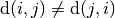
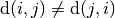

9.3. The Travelling Salesman Problem
The Travelling Salesman Problem (TSP) is probably the most known and studied problem in Operations Research. In this section, we briefly[1] present this fascinating problem and the TSPLIB which stands for the TSP library and is a library of sample instances for the TSP (and related problems) from various origins and of various types. To read TSPLIB data, we have implemented our own TSPData class as none of the available source code are compatible with our licence. Feel free to use it! Finally, we like to visualize what we are doing. To do so, we use the excellent ePiX library through our TSPEpixData class.
| [1] | Google TSP, Traveling Saleman Problem or Travelling Salesman Problem to find lots of examples, explanations, applications, etc. |
9.3.1. The Problem
Given a graph  and pairwise distances between nodes, the TSP consists in finding the shortest
possible path that visits each node exactly once and returns to the starting node. You can think about a
salesman that must visit several cities and come back to his hometown, hence the name the problem.
and pairwise distances between nodes, the TSP consists in finding the shortest
possible path that visits each node exactly once and returns to the starting node. You can think about a
salesman that must visit several cities and come back to his hometown, hence the name the problem.
The cost we want to minimize is the sum of the distances along the path. Although there is a special vertex called the depot from which the tour starts and ends, we are really concerned with the overall cost of the tour, i.e. the we could start and end the tour at every node without changing the objective cost of the tour.
Below you can find a picture of a solution of the TSP with 280 cities (a280) in the section Visualization with ePix.
The best algorithms can now routinely solve TSP instances with then thousands of nodes to optimality[2].
These instances are out of scope of the Constraint Programming paradigm[3]. CP shines when you consider complicated side constraints like the addition of time windows: each customer (represented by a node) has to be visited inside a given time interval.
| [2] | The record at the time of writing is the pla85900 instance in Gerd Reinelt’s TSPLIB. This instance is a VLSI application with 85 900 nodes. For many other instances with millions of nodes, solutions can be found that are guaranteed to be within 1% of an optimal tour! |
| [3] | At least for now and if you try to solve them to optimality. |
Do I really need a complete graph?
Symmetric or Asymmetric distances?
When we talk about a Travelling Salesman Problem, it is implicit that the distance between two nodes
 and
and  must be the same as the distance between and . This is not
mandatory. A distance in one direction could be larger than the distance in the other direction. For
instance, climbing a hill might cost more than descending it. When the distances are not symmetric, i.e.
, we talk about an Asymmetric TSP.
must be the same as the distance between and . This is not
mandatory. A distance in one direction could be larger than the distance in the other direction. For
instance, climbing a hill might cost more than descending it. When the distances are not symmetric, i.e.
, we talk about an Asymmetric TSP.
If you want to know more about the TSP, visit the TSP page which is the central place to discover this fascinating problem and hosts the best known implementation to solve the TSP (and it’s open source!). You also might be interested in the 8th DIMACS Implementation Challenge held in 2001 about the TSP.
9.3.2. Benchmark data
Several known benchmark data sources are available on the internet. One of the most known is the TSPLIB page. It’s a little bit outdated but it contains a lot of instances and their proven optimal solutions. Their TSPLIB format is the de facto standard format to encode TSP instances.
9.3.2.1. The TSPLIB format
The TSPLIB format is explained in great details in the document TSPLIB95. Here is a small excerpt to understand the basics. Refer to the TSPLIB95 document for more. The complete TSPLIB collection of problems has been successfully solved to optimality with the Concorde code in 2005-2006.
The convention in the TSPLIB is to number the nodes starting at 1. We’ll adopt this convention here[4] too. The Routing Library (RL) on the contrary starts numbering its nodes at 0.
| [4] | We have defined the bool gflags start_counting_at_1. Be default, it is true. When false, we number the nodes starting from 0. |
Warning
Nodes are numbered from 1 to n in the TSPLIB.
9.3.2.1.1. The instance file
The TSPLIB not only deals with the TSP but also with related problems. We only detail one type of TSP instance files. This is what the file a280.tsp[5] looks like:
NAME : a280
COMMENT : drilling problem (Ludwig)
TYPE : TSP
DIMENSION: 280
EDGE_WEIGHT_TYPE : EUC_2D
NODE_COORD_SECTION
1 288 149
2 288 129
3 270 133
4 256 141
5 256 157
6 246 157
...
EOF
Some of the attributes don’t need any explanation. The TYPE keyword specifies the type of data. We are only interested in:
- TSP: Data for the symmetric TSP;
- ATSP: Data for the asymmetric TSP and
- TOUR: A collection of tours (see next subsection below).
DIMENSION is the number of nodes for the ATSP or TSP instances. EDGE_WEIGHT_TYPE specifies how the edge weight are defined. In this case (EUC_2D), it is the Euclidean distance in the plane. Several types of distances are considered. The NODE_COORD_SECTION keyword starts the node coordinates section. Each line is made of three numbers:
Node_id x y
Node_id is a unique integer node identifier and (x,y) are Cartesian coordinates unless otherwise stated. The coordinates don’t have to be integers and can be any real numbers.
Not all instances have node coordinates.
There exist several other less obvious TSPLIB formats but we disregard them in this manual (graphs can be given by different types of explicit matrices or by edge lists for example).
You might wonder how the depot is given. It is nowhere written where to start a tour. This is normal because the TSP is not sensitive to the starting node: you can start a tour anywhere, the total cost of the tour remains the same.
| [5] | The file a280.tsp actually contains twice the same node (node 171 and 172 have the same coordinates) but the name and the dimension have been kept. This is the only known defect in the TSPLIB. |
9.3.2.1.2. The solution file
Solution files are easier to deal with as they only contain tours. Every tour, called a sub-tour, is a list of integers corresponding to the Node ids ended by -1.
This is what the file a280.opt.tour containing an optimal tour looks like:
NAME : ./TSPLIB/a280.tsp.optbc.tour
TYPE : TOUR
DIMENSION : 280
TOUR_SECTION
1
2
242
243
...
279
3
280
-1
Since this file contains an optimal tour, there are no sub-tours and the list of integers contains only one -1 at the end of the file.
9.3.3. The TSPData class
The TSPData class basically encapsulates a 2-dimensional matrix containing the distances between all nodes. For efficiency reasons, we use a 1-dimensional matrix with a smart pointer defined in the header base/scoped_ptr.h:
private:
scoped_array<int64> matrix_;
To mimic the behaviour of a 2-dimensional matrix, we use:
int64 MatrixIndex(RoutingModel::NodeIndex from,
RoutingModel::NodeIndex to) const {
return (from * size_ + to).value();
}
Notice how we cast the RoutingModel::NodeIndex into an int64 by calling its value() method.
The 1-dimensional matrix is made of the columns of the virtual 2-dimensional matrix placed one after the other.
What is a smart pointer?
A smart pointer is a class that behaves like a pointer. It’s main advantage is that it destroys the object it points to when the smart pointer class is itself destroyed[6]. This behaviour ensures that, no matter what happens (exceptions, wrong ownership of pointees, bad programming (yep!), etc.), the pointed object will be destroyed as soon as the pointer object is out of scope and destroyed.
| [6] | Several scenarii are possible. With reference counting, when more than one pointer refer to an object, it is only when the last pointer referring to the object is destroyed that the the object itself is destroyed. If you want to know more about this technique, look up RAII (Resource Acquisition Is Initialization). |
9.3.4. Visualization with ePix
To visualize the solutions, we use the excellent ePiX library. The file tsp_epix.h contains the TSPEpixData class. A TSPEpixData object is related to a RoutingModel and a TSPData. Its unique constructor signature is
TSPEpixData(const RoutingModel & routing, const TSPData & data);
To write a ePiX solution file, use the following methods:
void WriteSolutionFile(const Assignment * solution,
const std::string & epix_filename);
void WriteSolutionFile(const std::string & tpslib_solution_filename,
const std::string & epix_filename);
The first method takes an Assignment while the second method reads the solution from a TSPLIB solution file.
You can define the width and height of the generated image:
DEFINE_int32(epix_width, 10, "Width of the pictures in cm.");
DEFINE_int32(epix_height, 10, "Height of the pictures in cm.");
Once the ePiX file is written, you must evoke ePiX elaps script:
./elaps -pdf epix_file.xp
Here is an example of a solution for the file a280.tsp:

For your (and our!) convenience, we wrote the small program tsplib_solution_to_epix. Its implementation is in the file tsplib_solution_to_epix.cc. To use it, invoke:
./tsplib_solution_to_epix TSPLIB_data_file TSPLIB_solution_file >
epix_file.xp
Google or-tools |
User's Manual
Google search
Welcome
Tutorial examples
Current chapter
9. Travelling Salesman Problems with constraints: the TSP with time windows
Previous section
9.2. The Routing Library (RL) in a nutshell
Next section
9.4. The model behind the scene